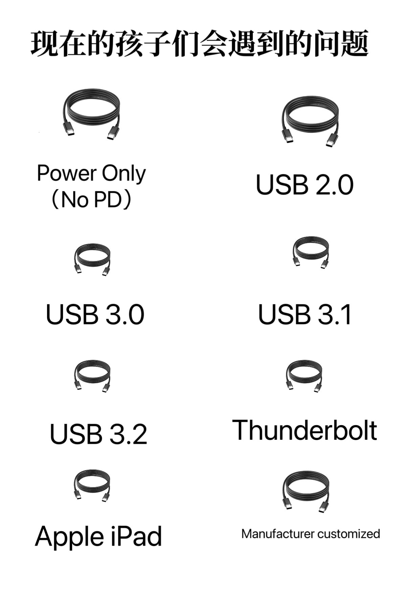

たたなこ🏳️⚧️🍥
@tatanakots
@CutePlank_meow @hsn8086xe 是的，但是当你遇到一筐线材

萌木超可爱
@CutePlank_meow
@tatanakots @hsn8086xe 除了华为早期用违反 usb-if 规范的双下拉电阻做快充识别之外，感觉别的都可以盲插，至少能跑 usb2.0 60/100w (取决是否 emarker)
小米魔改 a 口也是基于套壳 pd 协议，所以能转成正常 c 口，我现在已经平时几乎只代 c-c 线了。
唯一问题就是很多公共场所电源只有 a 口，不上 c 口也许因为耐用度考量吧